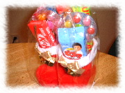

[前の日記] [過去の日記一覧へ] [次の日記]
新しいものは上になります。下
から読んでね(^^)


[前の日記] [過去の日記一覧へ] [次の日記]

[ホーム]

|
2001年12月9日(日) 晴れ 『クリスマスパーティ』  先週、毎年恒例の会社のクリスマスパーティ がありました。毎年、レストランに部全体の70人くらいが集まって、ラン チを食べたあと、あらかじめひとり10ドルで買っておいたクリスマスプレゼン トの交換をします。 レストランに着くと、ひとつのテーブルにみんなのプレゼントを山積みにして、 全員が番号のついた紙をひきます。そして、1番の人から順に、好きなプレゼ ントを選んで、自分がもらったプレゼントをみんなに見せます。次の人は、も し先に開けた人のプレゼントが欲しければ、それをもらうことができます。 人気のあるプレゼントは人から人へ渡ることになるんだけど、人のをとること ができるのは3回までです。だから、最初にひく番号は重要です。最初の方だ と取られる確立が高くて、最後の方になると、いいものは3回まわってしまっ て、取ることができません。 私が用意したプレゼントは、ごらんのような長靴にはいったお菓子の詰め合わ せ。誰も欲しがりませんでした(^^; さて、私は19番で、私に当たったのは大きなヨーロッパ製（らしい(^^;）人形。 ところが、周りの日本人からは不人気で「恵子さん、誰も取る人いないから心 配しなくて大丈夫(^^;」と言われたほどでした。 確かに誰もとりにこないので、もう今年はこれだと思って、どこに飾るか考え はじめてました。「こんなの家に飾ったら不気味だよな〜」「でも、会社に飾っ たら、夜こわくて残業できないかもしれない(^^;」などと考えていたのに、な んと、終盤に近づき、私の人形はとられてしまいました。こんなの欲しい人が いるんだ、とびっくりしました(^^;。そして、私は、誰かがとったワインをと りに行きました。 もう終わりも近かったので、これで決まりだと思っていたら、なんと、その人 形はまた別の人にとられていました。びっくり(^^;。そして、私のワインもと られてしまいました。こんな終わりでとられるとは思わなかったので、何をと るか考えていず、とっさに「そうだ、DVDをとろう！！」と思って、探し回っ た結果「ポリスアカデミー」のDVDをとってしまいました。 そこで、終わり。うーーん、私、「ポリスアカデミー」って見たことなくて、 内容も知らなくてとってしまったんだけど、評判は半々。おもしろいと言う人 と、「こんなのとったの？」と言う人(^^; 見てみたいんだけど、ここのところ、ものすごく忙しくて、見る時間がとれな いのよね(^^;。うーーん、ワインのがよかったよ〜。 2001年12月4日(火) 晴れ 『携帯電話』 ここのところ、ちょっとしたサーバの都合で、一部の人からは私のホームペー ジが見えなかったかもしれません。ごめんなさい。もう復旧しましたのでご安 心ください。（T1のプロバイダが私たちのサーバのIPアドレスを変更したため 起こりました。） さて、日本にいる間、1週間だけ携帯電話を使いました。帰ったその日にドコ モで新規入会しました。3050円。ちょっと高いけど、やっぱり携帯電話を持っ ているとすごく便利。 ここ数年、日本はどこもかしこも携帯電話となり、日本に一時帰国するとき、 公衆電話を探すのがたいへんになりました。こっち（米国）で普通に携帯電話 をつかっているため、その点でも携帯のない不自由さは気になります。 人との待ち合わせも、携帯をもっていれば、不手際で時間をロスすることもな いくて、すごく便利でした。 こっちに帰るときには「解約」ではなく「休止」にしました。こうしておけば、 次に帰ったときは1050円でまた開くことができます（ただし、番号は変わる）。 このままずっと「解約」にしないで「休止」にすれば、割引サービスもあって 少しずつ安くなっていくそうです。オススメです(^^) 日本でも「ハリーポッター」が公開になりましたね。私は先週の金曜日に見て きました。2時間半と長かったけど、面白かった。原作を読んでみたくなりま した。映画では細かい「？」（なぜ）が多くて。 |
|
新しいものは上になります。下から上に読んでね(^^) |
[前の日記] [過去の日記一覧へ] [次の日記]
[ホーム]